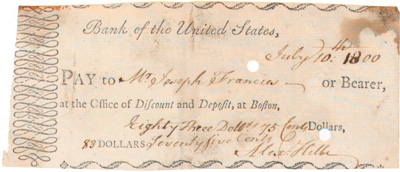

|

[front]
Bank of the United States,
July 10.th 1800
PAY to Mr. Joseph Francis-- or Bearer,
at the Office of Discount and Deposit, at Boston,
Eighty three Doll[ ] 75 Cents Dollars,
83 Dollars Seventy five Cents
|
|
After the American Revolution, the states and the federal government chartered banks to issue bills of credit that were used as paper money; specie was still scarce.
|
| ? |
Could Martha have used this as money? |
|